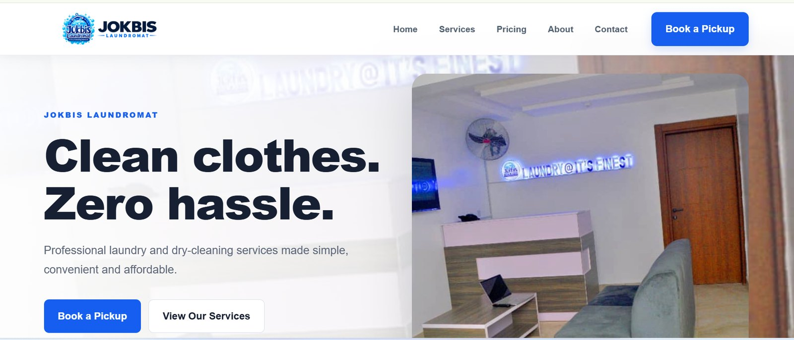
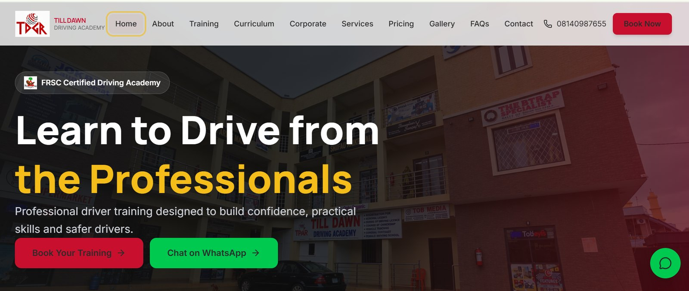
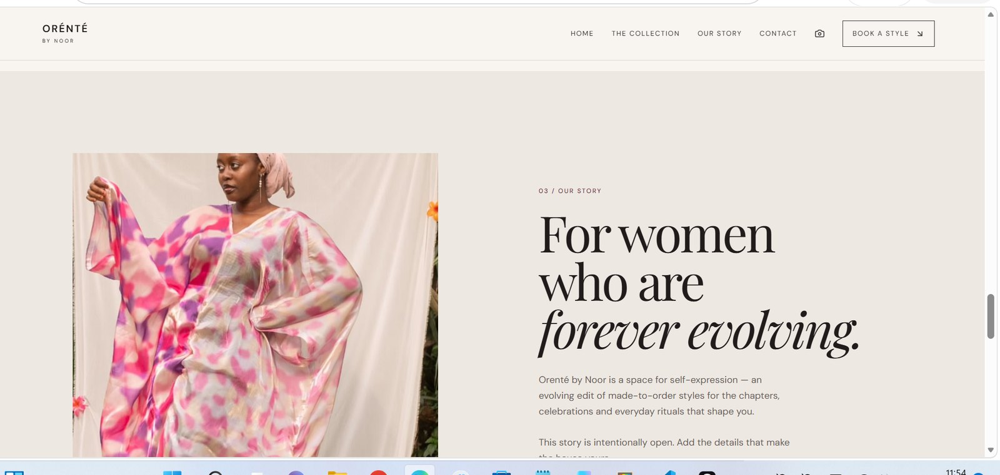
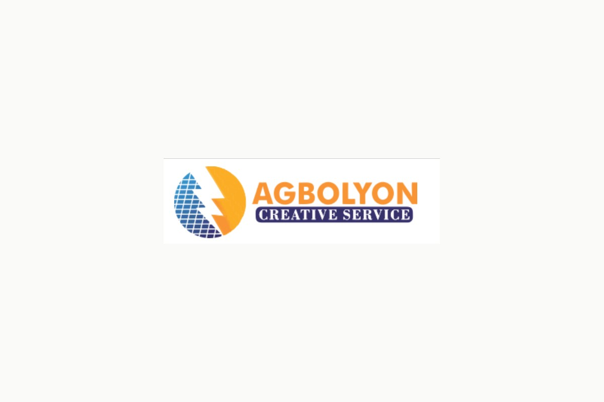

Selected work · Case studies
Building digital experiences for real businesses.
A closer look at selected website projects, their business context and the work delivered. Details reflect the project scope currently confirmed.
Business website · Live
JOKBIS Laundromat

A dedicated online presence for a laundromat business, designed to help customers understand its services, review key information and make enquiries.
Project focus
- Present laundry services clearly.
- Make important business information easy to find.
- Provide clear routes for customer enquiries and booking interest.
- Deliver a responsive experience.
My contribution
- Website planning and interface development.
- Page layout and responsive styling.
- Service and pricing presentation.
- Deployment and launch support.
Education & training website · Live
Till Dawn Driving Academy

A corporate website for a driving academy, structured to communicate training services, learning programmes, pricing and contact information to prospective students.
Project focus
- Explain driving training options.
- Present curriculum and programme information.
- Make pricing and enquiries accessible.
- Support mobile and desktop visitors.
My contribution
- Website structure and frontend development.
- Training, service and pricing pages.
- Responsive interface implementation.
- Content presentation and deployment.
Fashion brand website · In development
OrenteByNoor

A digital showroom concept for a made-to-order fashion brand, focused on presenting styles and communicating the brand identity.
Project focus
- Showcase made-to-order fashion styles.
- Reflect the brand's visual direction.
- Organise imagery and collection content.
- Create a responsive browsing experience.
Development scope
- React and Vite frontend.
- Brand-led layout and styling.
- Style and product presentation.
- Preparing the site for launch.
Not yet live. This preview represents work in progress.
Renewable energy corporate website · In development
Agbolyon Creative Services

A corporate website in development for a renewable energy installer offering solar, inverter and battery systems, maintenance, commercial solar solutions and windmill installation.
Project focus
- Explain renewable energy installation services.
- Build trust through a clear corporate presentation.
- Reserve space for project and installation galleries.
- Make enquiries straightforward.
Development scope
- React and Vite frontend.
- Service-led information architecture.
- Responsive visual design.
- Preparing gallery areas for future uploads.
Not yet live. This preview represents work in progress.